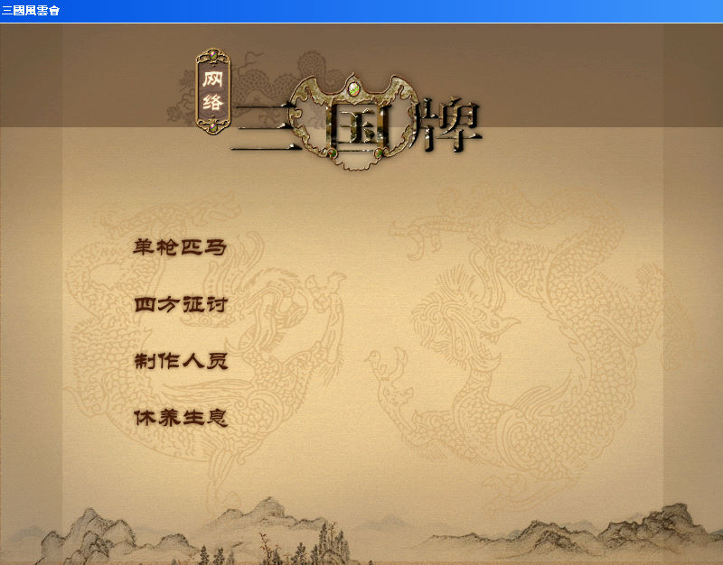
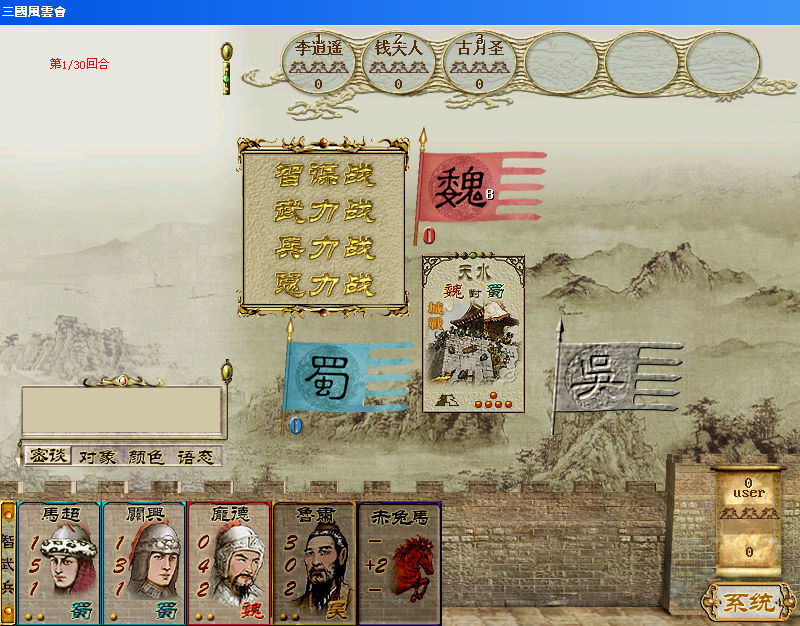

名稱：網絡三國牌／三國風雲會 (簡中版) 簡介：大宇旗下軟星2002年出品的卡牌遊戲 [待補]。   保護：光碟+序號（2GWGFFF8K-3MKQFP2HH），破解碼（放入光碟才有背景音樂）： n3kc.net 84 C0 75 3E 66 C7 -- -- EB -- -- -- FF 40 75 3E 66 C7 -- -- EB -- -- -- 檔案：n3kc_up.rar = 網路對戰更新檔

